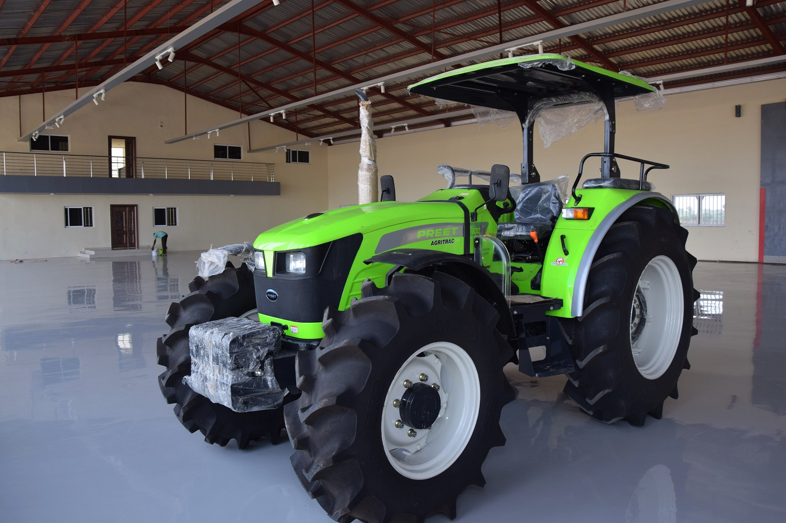
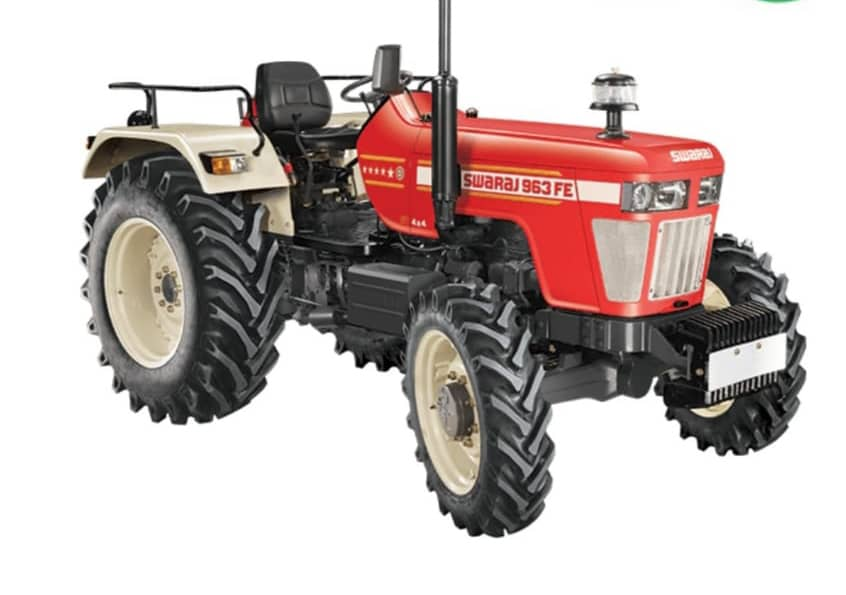

Sales & Servicing
Sales and servicing of Massey Ferguson and Preet Tractors, backed by expert technical support.
At the forefront of agricultural mechanization in Nigeria — supplying, assembling and servicing world-class tractors, implements and farm machinery. Our goal is to continuously satisfy our clients.

Mass International & Equipment Nig. Ltd is at the fore front of the promotion of agricultural activities for both field and crop production machinery and processing equipment in Nigeria. The company has been into importation, assembly and manufacturing of assorted tractors and relevant machineries for over two decades.
All the implements are backed with relevant spare parts and other consumables. The company has also won a certificate of merit from the Kaduna State Chamber of Commerce, Industry, Mines and Agriculture for being the best Exhibitor of Agricultural Machinery in Nigeria.
A complete range of agricultural machinery, implements and after-sales support — engineered to transform farming across Nigeria.
Sales and servicing of Massey Ferguson and Preet Tractors, backed by expert technical support.
Sales of land preparatory equipment such as Ploughs, Harrows, Riggers, Tillers and Levelers.
Sales of Planters, Drills and Diggers — including Pneumatic and Mechanical Planters and Seed Drills.
Fodder Reapers, Slashers, Forage Cutters, Mowers, Reapers and Combined Harvesters.
All kinds of threshing and spraying equipment — Maize, Rice & Groundnut Threshers, Boom Sprayers and more.
Every implement is backed with relevant spare parts and other consumables to keep your operation running.
Certificate of Merit from the Kaduna State Chamber of Commerce for the best Exhibitor of Agricultural Machinery in Nigeria.
Importation, assembly and manufacturing of assorted tractors and machinery — right here in Nigeria.
Full technical servicing plus a steady supply of spare parts and consumables for every machine we deliver.

Talk to our team about tractors, implements, spare parts and servicing tailored to your operation.